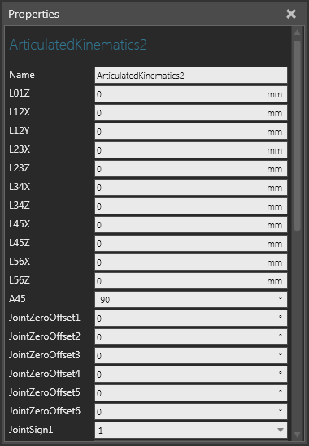

An Articulated Kinematics behavior is a list of kinematic properties used by a Robot Controller for solving an articulated robot's motions which relate to joint length, angle, positioning, coupling, configuration and tolerance levels.

| Name | Description |
| Name | Defines the name of the kinematics. |
| L01Z to L56Z | Defines the offset between two joints in a given axis.
L01Z L23X L56X |
| A45 | Defines the angle (in degrees) between the fourth and fifth joints. Generally, 90 or -90 is used, but an angle value close to 45 is also common in certain cases. |
| JointZeroOffset1 to JointZeroOffset6 | Defines the joint-zero pose of the robot (arm-up space). JointZeroOffsets are used as a kinematic solution for determining the robot's pose when its joints are at zero value. Different robot vendors tend to use different joint zero positions for robots. |
| JointSign1 to JointSign6 | Defines which direction is the positive direction of a joint, for example if you flip joint rotation from clockwise to counter-clockwise. |
| Coupling23 | Indicates if the second and third joints are coupled, albeit mechanically or represented in software. For example, if you move the second joint then the third joint will do a counter movement. |
| ShoulderValid | Turns on/off the use of valid configurations.
A True value turns on the following configurations:
A False value turns off the following configurations:
|
| ElbowValid | Turns on/off the use of valid configurations.
A True value turns on the following configurations:
A False value turns off the following configurations:
|
| WristValid | Turns on/off the use of valid configurations.
A True value turns on the following configurations:
A False value turns off the following configurations:
|
| ConfigName1 to ConfigNameN | Defines the names of configurations for the robot's arm. Different robot types may use different naming conventions for the same configurations. |
| PalletizingMode | Turns on/off the direction of the robot's wrist to point in the direction defined by PalletizingNormal. |
| PalletizingNormal XYZ | Defines the direction of the robot's wrist when PalletizingMode is enabled. |
| PolarSingularityTolerance | Defines the radius of the robot's singularity circle, a small round space defined at the end of the robot's arm. |
| WristSingularityTolerance | Defines the angle tolerance of the robot wrist's singularity. That is, when the fifth joint approaches zero value it can be counted as singularity, therefore an angle tolerance can used in such cases. |
| ExtendedPositionTolerance | Defines the tolerance value to detect singularity in a robot's configuration when either the robot is in an extended position or its elbow will pass through zero to reach a point. The value (in degrees) must be greater than or equal to zero. If the value is zero then there is no singular solution and most likely the user receives a reachability error. Singularity or an orientation solution based on configuration changes in a robot's elbow to reach a point may require a user to define ExtendedPositionTolerance. |
| Coupling456 | Defines the coupling relationship between 4,5 and 6th axes. The rotations of the 5th and 6th axes are defined when induced by a motion in the 4th axis. This property is rarely used and the coupling term is fractional and must be supplied by the robot manufacture. Otherwise, use a value of zero. Coupling456 is needed, for example, when a hollow triple roll wrist is used, where the design of the mechanism causes a coupling between all of the axes. |